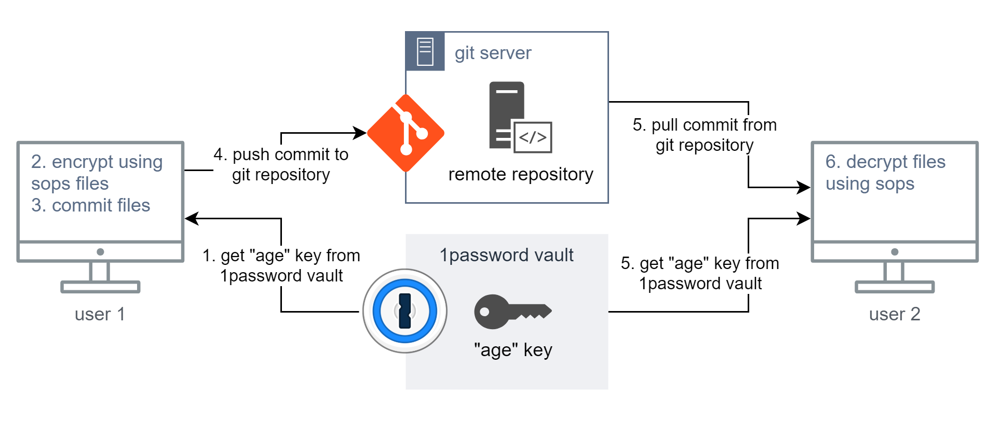

Manage Sensitive API Keys in Public Dotfiles Using PGP and SOPS
In modern development environment, it’s common to host dotfiles publicly—especially for sharing across machines or with the broader developer community. However, this convenience introduces security risks, such as accidentally exposing sensitive information like API keys, tokens, and credentials in public repositories. API keys for services like OpenAI, Anthropic, Google Cloud, and more, if exposed, can lead to security breaches and unauthorized access.
Imagine pushing your meticulously crafted dotfiles to GitHub, only to realize hours later that you've just exposed your OpenAI API key to the entire internet. Sounds like a nightmare? Unfortunately, it's an all-too-common reality for many developers.
The recent explosion of interest in AI development has brought a wave of excitement - and a flood of new developers eager to experiment with powerful AI APIs. From ChatGPT, anthropic to midjourney, flux, these tools are reshaping how we approach software development.
But with great power comes great responsibility, and I've noticed an alarming trend: more and more developers, especially those new to development, are accidentally exposing their API keys and other sensitive credentials in public repositories.
This isn't just a rookie mistake - even seasoned developers can fall into this trap when rushing to share their latest AI project or dotfiles setup. The consequences can be severe: unauthorized API usage, compromised accounts, and in some cases, significant financial losses. It's this recurring issue that compelled me to write this guide. We need a solution that's both secure and accessible, especially for those just starting their journey in AI development.
In today's interconnected development landscape, we often find ourselves walking a tightrope between convenience and security. We want to share our development setups across multiple machines, collaborate with team members, and contribute to the open-source community. But how do we do this without compromising our sensitive data? This post delves into a bare bones solution for this pervasive problem. We'll explore how to leverage the power of PGP encryption and Mozilla's SOPS to create a system where your API keys, tokens, and other secrets remain hidden, even in public repositories. By the end of this guide, you'll have a Unix-native, cost-effective method to:
- Securely store sensitive data in your dotfiles
- Easily share your development setup across multiple machines
- Maintain the convenience of public repositories without sacrificing security
Whether you're a solo developer juggling multiple AI projects or part of a team managing shared configurations, this guide will provide you with the tools to keep your secrets... well, secret. Let's dive in and transform those vulnerable dotfiles into a fortress of security!
Table of Contents
- Functional Requirements
- Solutions Considered
- Solution Blueprint
- PGP
- SOPS
- Setting up SOPS with PGP
- Conclusion
- TLDR
Functional Requirements
Before diving into the solution, let’s outline the functional and non-functional requirements:
-
Must work as early as
.profileor.bashrc. - Should enable easy sharing of the same setup across multiple machines.
- Must remain as Unix-native as possible (i.e., avoid desktop password managers or proprietary key-sharing solutions).
- Should not introduce ongoing costs for key management.
Solutions Considered
Here are the primary options we explored for managing sensitive data in dotfiles:
-
Enterprise Tools
: Solutions like HashiCorp Vault or Azure KMS offer
robust key management but come with added complexity and cost.
- Pros : Secure, widely used, highly customizable.
- Cons : Requires maintenance, has a learning curve, and may incur costs for smaller teams.
-
Password Managers or Secret Managers
: Storing secrets in managers like
LastPass or Bitwarden is an option.
- Pros : Easy to use, available on multiple platforms.
- Cons : Not ideal for dotfiles or Unix-native environments; overkill for this use case.
-
PGP + SOPS
: This is the Unix-native method we will focus on. It’s
simple, secure, and there’s no ongoing cost.
PGP
encrypts your secrets,
and
SOPS
manages them effortlessly.
- Pros : Cost-effective, simple, Unix-friendly.
- Cons : Requires knowledge of PGP and some configuration.
Solution Blueprint
To manage your secrets in public dotfiles, follow these steps:
-
Install PGP (
gpg). - Install Mozilla SOPS.
- Generate a PGP key and store it securely.
-
Create a secrets file (
~/secrets.env) outside of your git repository. -
Use PGP and SOPS to encrypt the secrets file and commit the encrypted
version to your dotfiles (
~/dot-files/secrets.gpg.env). -
Modify your
.profileor.bashrcto decrypt and source the secrets directly into memory on startup.
Here's a diagram to visualize the solution flow:

PGP
PGP is a powerful encryption system that uses public-key cryptography . In our solution, the client (your machine) uses a public key to encrypt the data, and the server (or another machine) uses a private key to decrypt it.
Here’s how it works:
- You encrypt your secrets file using your public PGP key.
- On the machine where you need the secrets (such as a server), you decrypt the file using the corresponding private key.
If you’re unfamiliar with PGP’s encryption mechanism, read this simplified explanation of Web of Trust .
SOPS
SOPS (Secrets OPerationS) , created by Mozilla, is a powerful tool that makes working with encrypted files easy. It supports PGP, AWS KMS, Google Cloud KMS, and other encryption systems.
For our solution, we’ll use PGP with SOPS. SOPS ensures the secrets are encrypted in place and can easily be decrypted when needed. You can either use a single PGP key for all your environments or assign a unique key for each service.
In more complex setups, you might want to look into using AWS KMS to manage your keys, as it decouples key management from access credentials, which offers a higher level of security for larger teams.
Setting up SOPS with PGP
Let’s walk through the step-by-step process of setting up SOPS with PGP to secure your secrets:
- Install PGP and SOPS .
-
Generate a PGP key
by running
gpg --gen-keyand configuring as follows:- Key type: RSA and RSA
- Key size: 2048
- Expiration: 0 (never expires)
- Real name: "{{repo}} PGP"
- Email: "{{email}}"
- Comment: "PGP credentials for {{repo}} secrets"
- Create an encrypted secrets file using SOPS:
- Store your private key securely , for instance, in a cloud vault or outside the git repository:
-
Modify your
.profileto decrypt the secrets on startup :
Conclusion
As we've explored in this guide, managing sensitive information in public dotfiles is not just a best practice—it's a critical component of modern secure development, especially in the rapidly evolving world of AI and machine learning.
By leveraging the power of PGP and SOPS, we've unlocked a robust, Unix-native solution that allows us to:
- Encrypt our secrets securely, ensuring they're only accessible to intended recipients
- Share our development setups across multiple machines without compromising security
- Contribute to open-source projects and share our dotfiles publicly with confidence
This approach scales well from individual developers to small and medium-sized teams, integrating seamlessly with existing Unix-like environments. It's particularly valuable for those working with AI APIs, where exposed credentials can lead to significant security breaches and unexpected costs.
Remember, as you continue your journey in AI development or any field requiring API keys and other secrets:
- Regularly audit your public repositories for any accidentally exposed credentials
- Consider implementing this PGP + SOPS solution as part of your standard development workflow
- Educate your team or community about the importance of secure credential management
For those looking to take their security posture to the next level, consider exploring more advanced setups supported by SOPS, such as integrating with AWS KMS for larger-scale key management, or incorporating these practices into your CI/CD pipelines.
Securing your secrets doesn't have to come at the cost of collaboration or convenience. With the approach outlined in this guide, you can embrace the open, sharing culture of the developer community while keeping your sensitive information locked down tight.
Stay curious, keep experimenting with AI, and above all, keep your secrets secret. Happy (and secure) coding!
Here's the steps in a single "not thoroghly tested" bash script. It should be easy to follow and even easier to fix
TLDR
⚠️ Greybeard Territory: Proceed with Caution ⚠️
For the Impatient Greybeards: The All-in-One Setup Script
The following section contains a bash script that automates the entire setup process. It's for those who prefer to dive in headfirst and tweak things later. If you're new to this, we strongly recommend following the step-by-step guide above instead.
Remember: With great power comes great responsibility. This script will make changes to your system. Review it carefully before running, and maybe pour yourself a strong cup of coffee first.
For those of you who scoffed at the detailed explanations and just want to get things running, here's a bash script that sets up the entire PGP + SOPS environment in one go. It's not thoroughly tested, so consider this a starting point for your own customized setup.
To use this script:
-
Save it as
setup_secrets.sh -
Make it executable:
chmod +x setup_secrets.sh -
Run it:
./setup_secrets.sh
Remember, this script is a starting point. You might need to adjust it based on your specific environment or requirements. And as always, review any script carefully before running it on your system.
Now, for those of you who skipped straight to this section: go back and read the rest of the post. There's valuable context and explanations up there that will help you understand what this script is actually doing. Don't say we didn't warn you!
#!/bin/bash
# Function to confirm actions from the user
confirm() {
read -r -p "${1:-Are you sure? [y/N]} " response
case "$response" in
[yY][eE][sS]|[yY])
true
;;
*)
false
;;
esac
}
# Install GPG (GNU Privacy Guard)
if confirm "Do you want to install GPG (GNU Privacy Guard)? [y/N]"; then
echo "Installing GPG..."
sudo apt-get update
sudo apt-get install -y gnupg
else
echo "Skipping GPG installation."
fi
# Install SOPS (Secrets OPerationS)
if confirm "Do you want to install Mozilla SOPS? [y/N]"; then
echo "Installing SOPS..."
wget https://github.com/mozilla/sops/releases/download/v3.7.3/sops-v3.7.3.linux -O sops
chmod +x sops
sudo mv sops /usr/local/bin/
else
echo "Skipping SOPS installation."
fi
# Remove SOPS default PGP keys
if confirm "Do you want to remove any default SOPS PGP keys? [y/N]"; then
echo "Listing GPG keys..."
gpg --list-keys
echo "Enter the fingerprint of the key you want to delete (or press Enter to skip):"
read -r fingerprint
if [ -n "$fingerprint" ]; then
echo "Deleting key with fingerprint $fingerprint..."
gpg --delete-keys "$fingerprint"
gpg --delete-secret-keys "$fingerprint"
else
echo "No keys deleted."
fi
else
echo "Skipping sops default key deletion."
fi
# Generate a GPG key
if confirm "Do you want to generate a new GPG key for encrypting secrets? [y/N]"; then
echo "Generating GPG key..."
gpg --gen-key
else
echo "Skipping GPG key generation."
fi
# Create the secrets.env file
if confirm "Do you want to create a new secrets.env file at ~/secrets.env? [y/N]"; then
echo "Creating a new secrets.env file at ~/secrets.env..."
cat <<EOL > ~/secrets.env
# Add your secrets here in KEY=VALUE format
API_KEY=your_api_key_here
SECRET_KEY=your_secret_key_here
EOL
echo "Created secrets.env. Please add your sensitive data."
else
echo "Skipping secrets.env creation."
fi
# List available GPG keys and their fingerprints
echo "Encrypting your ~/secrets.env"
echo "Select Available GPG keys:"
gpg --list-keys --fingerprint
# Ask the user to select a GPG key fingerprint
echo "Enter the fingerprint of the GPG key you want to use for encryption:"
read -r fingerprint
# Check if the user input is empty
if [ -z "$fingerprint" ]; then
echo "No fingerprint provided. Aborting encryption."
exit 1
fi
# Encrypt the secrets.env file using the selected fingerprint and save it as secrets.gpg.env
if [ -f ~/secrets.env ]; then
echo "Encrypting secrets.env into secrets.gpg.env..."
sops --encrypt --pgp "$fingerprint" ~/secrets.env > ~/secrets.gpg.env
echo "Encryption complete. Encrypted file saved as ~/secrets.gpg.env"
else
echo "secrets.env not found in home directory. Please create it first."
exit 1
fi
echo "Setup complete!"
Footnotes
- PGP vs. SSH Encryption: Link to Wikipedia
- SOPS GitHub Repo: SOPS on GitHub
- Here's a great info-graphic of all the ways sops can be used by the good folks at GitGuardian